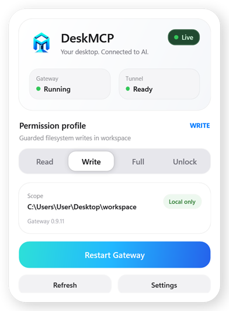
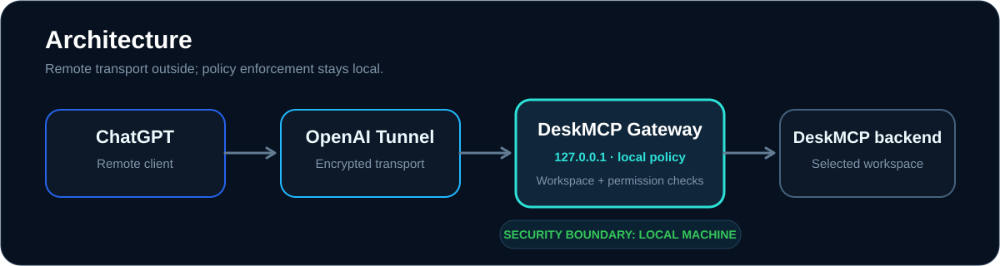

See the boundary.
Gateway health, Tunnel status, Workspace and permission profile are visible in one native control surface.
DeskMCP gives ChatGPT a controlled path to Windows files, background terminal sessions and opt-in visible CMD or PowerShell consoles — while permission decisions and UAC approval stay on your machine.

Most bridges hide the dangerous part: what can actually touch your machine. DeskMCP puts that decision in front of you.
Gateway health, Tunnel status, Workspace and permission profile are visible in one native control surface.
Move deliberately from Read to Write, Full or Unlock. Higher-risk profiles are explicit and session-owned.
The Tunnel transports requests. DeskMCP still decides locally whether filesystem or process work is allowed.
One glance tells you whether the bridge is alive, which profile is active, what Workspace is in scope, and whether your Tunnel is ready.
window_mode: "visible"runas + UAC supports hidden or visible admin processesVisible consoles receive keyboard input directly from their Windows window. desktop_interact_process remains for hidden DeskMCP-managed terminal sessions.

The Gateway HTTP service binds to 127.0.0.1.
Read, Write and Full enforce canonical path boundaries before forwarding work.
Hidden, visible and elevated consoles stay attached to DeskMCP-owned process trees instead of arbitrary Windows PID control.
Administrator processes use Windows runas and still require local approval whether their console is hidden or visible. DeskMCP does not bypass UAC.
No file contents, secrets, terminal I/O or real PIDs in audit logs.
No Node.js, npm, .NET SDK, Git or source checkout required for the public Windows installer.
Run Setup and choose the Workspace DeskMCP may access.
Paste the Tunnel ID and Runtime API Key into First Run.
Create the Plugin with Tunnel + No auth, then confirm the 13 DeskMCP tools.
Choose the installer that matches your Windows architecture.
Windows builds are currently unsigned while Authenticode signing remains pending, so SmartScreen may show an Unknown Publisher warning.